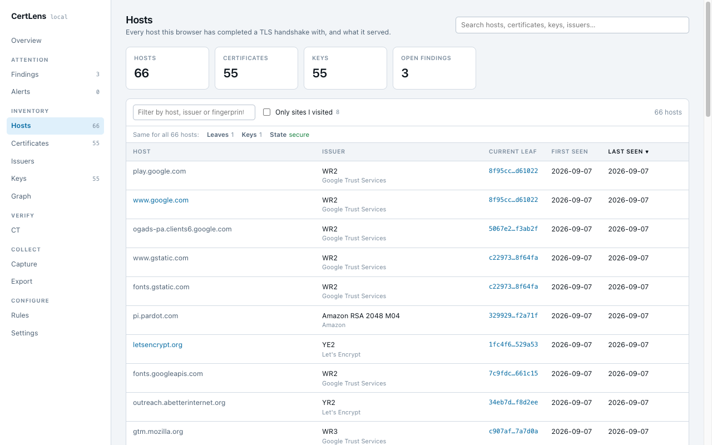
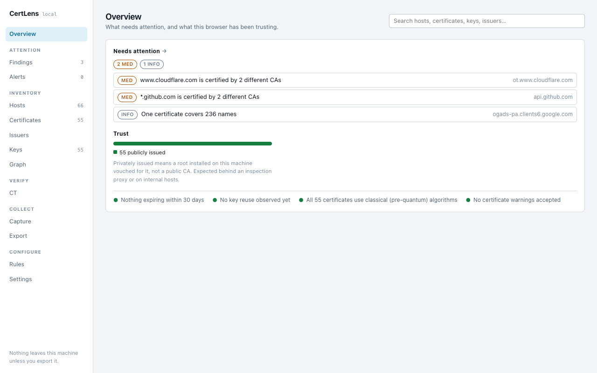

CertLens
A passive certificate sensor for Chrome. Every certificate, key and chain your browser meets, inventoried locally. Network lookups are opt-in, and each one says what it sends and to whom.
CertLens turns your browser into a passive TLS certificate sensor. Every HTTPS connection your browser makes shows it a certificate; CertLens keeps every one, and the public keys, issuers and hosts behind them, in a local inventory, and runs 43 rules over it.

What you get
- An inventory of hosts, certificates, public keys and issuers, with a graph of how they connect.
- Interception detection: a certificate on a public site issued by a CA installed on your machine is flagged, on the page itself before you type, and once for the network when one proxy re-signs many sites.
- Certificate Transparency: every embedded SCT verified locally against the public log list; optional crt.sh lookups.
- Post-quantum posture: which certificates and keys are quantum-safe, on two axes (key and signature).
- Key reuse, weak crypto, expiry, mis-issuance, chain and revocation checks, each with "when this is normal" and "what to do".
- Pin a host's CA and key, and optionally block the page if either changes.
- Sessions: record what is captured while one runs, carry a session to another browser, merge or delete.
- Export as JSON, CSV, PEM, PKCS#7 chain bundles, a ZIP of selected certificates, or a findings report in HTML or Markdown.

Privacy in one sentence
Nothing is sent anywhere unless you turn on a network feature, and each one says exactly what it sends and to whom. No account, no analytics, no telemetry. The full privacy policy is short and worth reading.
Requirements
Chrome 144 or later. Until Chrome enables it by default, the flag WebRequestSecurityInfo must be on: open chrome://flags, search for it, enable it, relaunch. CertLens explains this on first run and its Capture tab reports whether certificates are arriving.
Install
CertLens is in review for the Chrome Web Store. The listing link will appear here when it is live.
Support
Something wrong, or a certificate CertLens misread? See support.